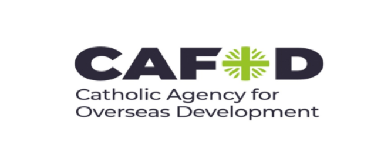
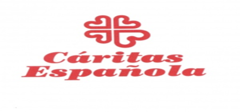
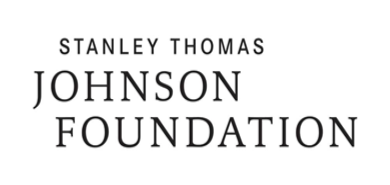
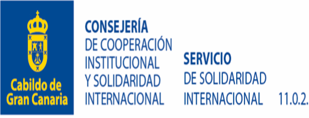

Our Partners
We collaborate with global and local partners — including Catholic agencies, humanitarian organizations, and community foundations — to serve people in need through action inspired by faith and love.





What We Do
Caritas Archdiocese of Juba responds to urgent crises while building long-term resilience. Our teams combine humanitarian relief, livelihoods, peacebuilding and protection so communities can recover with dignity.
Emergency Response
Rapid delivery of food, water, shelter and protection for families displaced by conflict and climate shocks.
- Pre-positioned relief stocks and mobile response teams
- Cash assistance that restores choice and dignity
Water & Health
Safe water systems, hygiene promotion and community health outreach that keep disease at bay.
- Borehole rehabilitation with local water committees
- Maternal, child and nutrition services in parish clinics
Resilience & Peace
Livelihood support, education, peacebuilding and safeguarding programmes that rebuild hope.
- Farmer field schools, youth enterprises and savings groups
- Dialogue, trauma healing and protection services